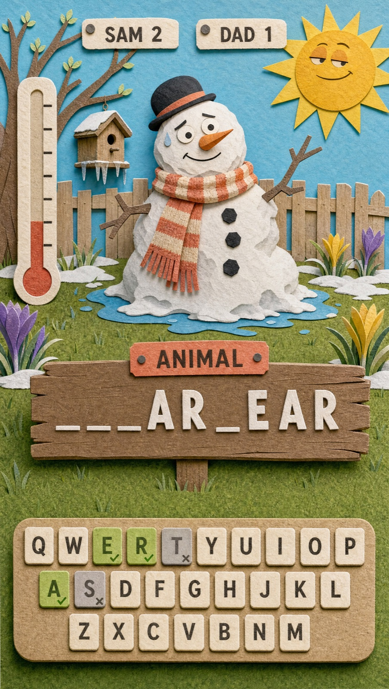
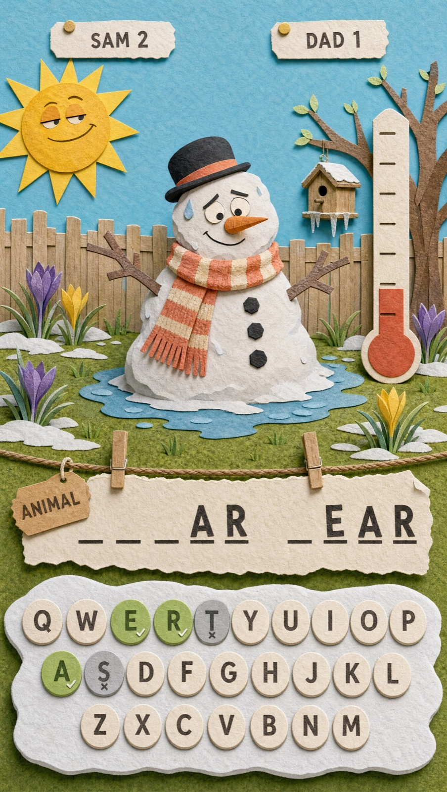
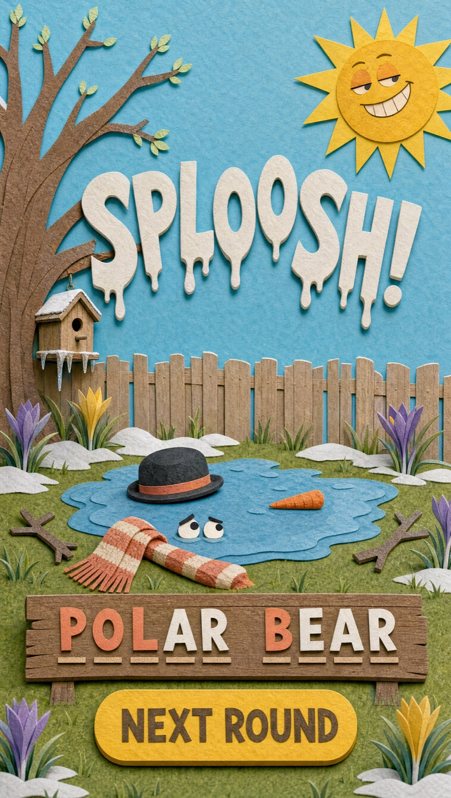
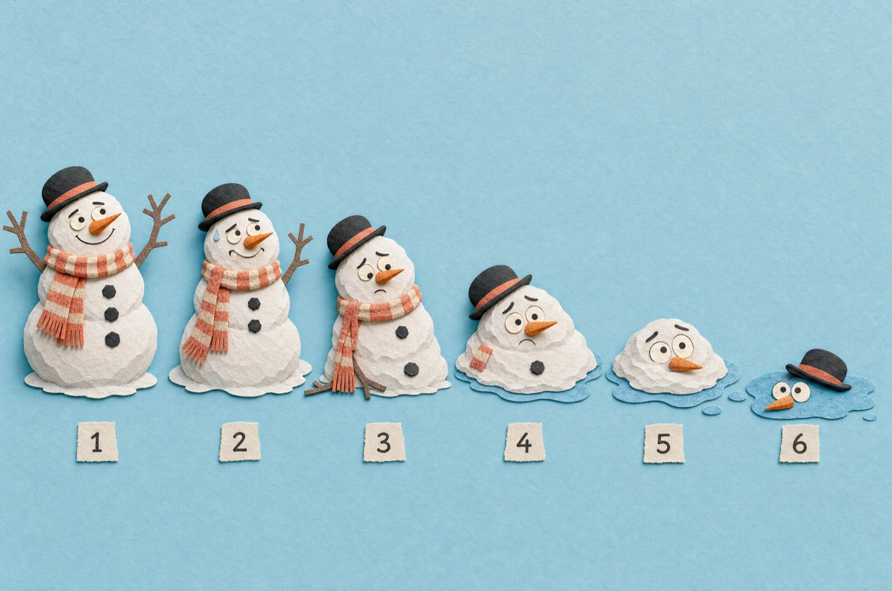
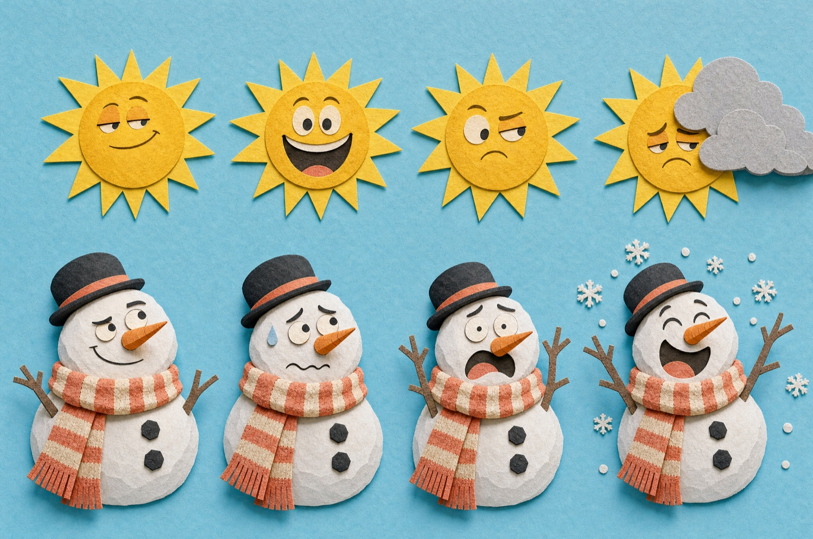
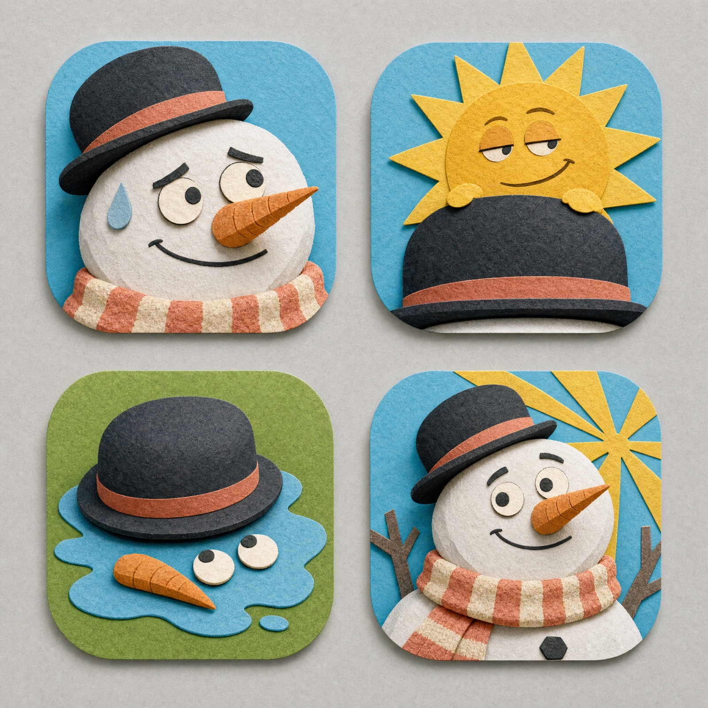

Cut paper, round 2
The look you picked, on the screens the game needs. Tap a picture to see it full size. These are mock-ups, so the names and the puzzle are made up.
The play screen, two ways

1. Garden signAnswer on a wooden sign. Square keys in a brown paper tray.

2. Pegged bannerAnswer on a paper banner on a line. Round keys on a snowbank.

6. A lost roundThe puddle gag, the answer shown, and the next button.
The snowman and the sun

3. Melting, in six stagesFrom proud to puddle.

4. MoodsThe sun: smug, gleeful, annoyed, clouded over. The snowman: ham, nervous, panicking, cheering.
Icon ideas

5. Four iconsTop left: nervous face. Top right: sun over the hat. Bottom left: the puddle. Bottom right: snowman and rays.